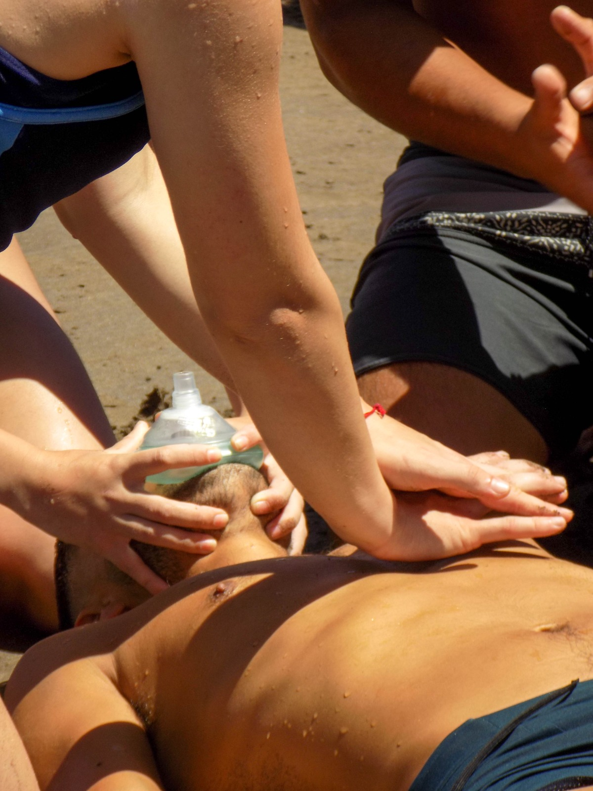
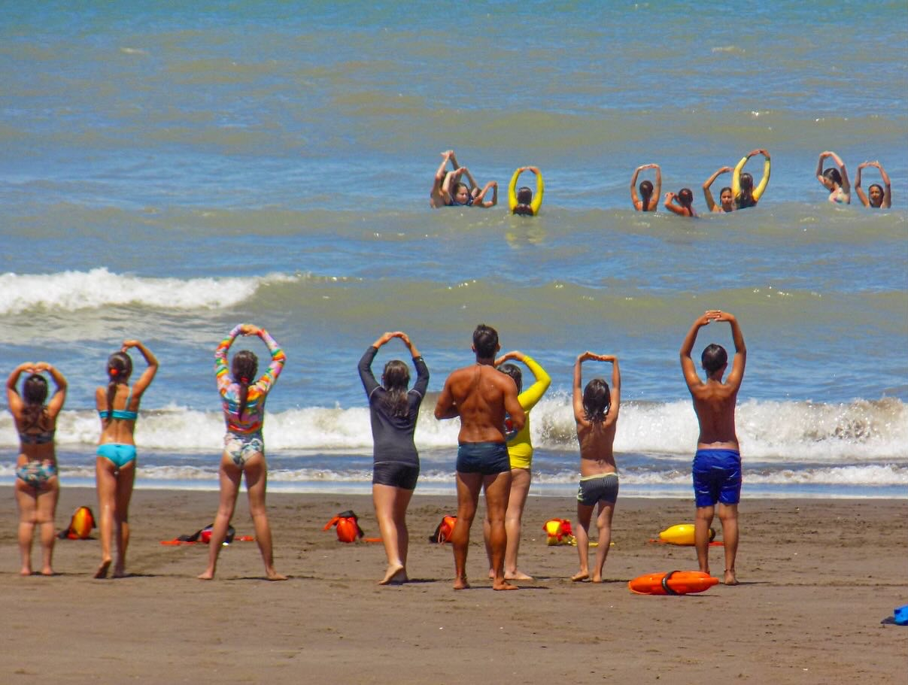
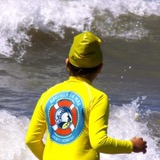
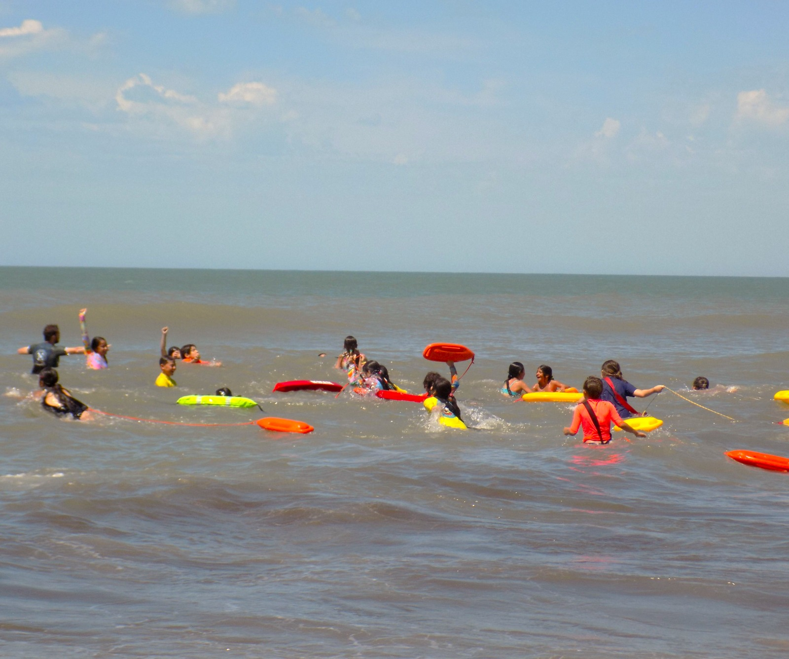

Escuela de Mar
Aprender haciendo. Aprender en el mar.
Experiencias educativas, deportivas y recreativas para niños, niñas y adolescentes.
Descubrir →Asociación Civil · Escuela de Mar Monte Hermoso
Educación · Prevención · Deporte · Comunidad
Conocenos ↓Una escuela que nació en la playa
Somos amigos, docentes y guardavidas. En 2018 empezamos a imaginar una escuela inspirada en los programas Junior Lifeguard, las experiencias educativas en la naturaleza y nuestra propia relación con el mar y los deportes de tabla.
En enero de 2019 comenzó nuestra primera temporada. Hoy somos la Asociación Civil Escuela de Mar Monte Hermoso y aquel proyecto continúa creciendo.
Conocé nuestra historia →
NUESTRA PLAYA
TAMBIÉN ES NUESTRA AULA.
Monte Hermoso · Buenos Aires · Argentina
Una misma misión
Aprender haciendo. Aprender en el mar.
Experiencias educativas, deportivas y recreativas para niños, niñas y adolescentes.
Descubrir →El conocimiento también salva vidas.
RCP, Cadena de Sobrevida, prevención, seguridad acuática y ambiente costero.
Conocer →Entrenar. Aprender. Superarse.
Una nueva disciplina deportiva crece en Monte Hermoso.
Descubrir →Observar. Interpretar. Reconocer riesgos. Conocer para poder decidir.
Aprender haciendo
HAY APRENDIZAJES QUE NO SUCEDEN FRENTE A UN PIZARRÓN.
Nadamos. Corremos. Remamos. Jugamos. Observamos. Preguntamos. Experimentamos. Entrenamos. Nos ayudamos.




De la playa a la comunidad
Articulamos con instituciones educativas de diferentes niveles con propuestas adaptadas a cada edad.
Quiero una actividad para mi institución →Salvamento Deportivo
Natación. Carrera. Habilidades acuáticas. Técnica. Entrenamiento. Competencia.
MENORES · CADETES · JUVENILES
Descubrir Salvamento Deportivo →Conocer para cuidar
El mar y la playa no son solamente el lugar donde realizamos nuestras actividades. Son el ambiente que habitamos.
Una nueva etapa
Lo que comenzó como una propuesta de temporada amplió sus horizontes: instituciones educativas, trabajo durante todo el año, Salvamento Deportivo y una nueva estructura institucional.
Conocé la Asociación →